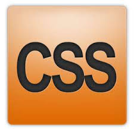
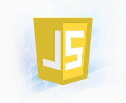
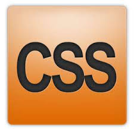
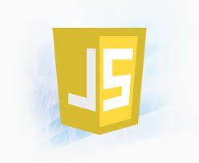

html
Hyper Text Markup Language.
It describes the structure of web pages using markup and affects the Contents of web pages. Involves use of Elements which are the building blocks of HTML and Tags which render the contents of the page.
css
Cascading Style Sheet.
Describes the Layout of web pages. How HTML elements are to be displayed on screen. CSS saves alot of work as it can control the layout of multiple web pages all at once.
Javascript
Programming language.
Java script is used to program the Behavior of web pages. Mostly used as a client side scripting language i.e. javascript code is written into an HTML page. Like to automatically ouput the date on this page.